5.1 Redox Equilibria · Topic 16
Electrode potentials, electrochemical cells, fuel cells and redox titrations
5.1 Redox Equilibria · Topic 16
本页严格按 Pearson Edexcel International Advanced Level Chemistry specification 的 Topic 16: Redox Equilibria 编排，主要依据项目内的 5.1 Redox Equilibria.pdf.pdf。解释采用中文，专业词汇保留 English，便于和 Data Booklet、electrochemical series 及 exam wording 对照。
Learning objectives
学完本章后，你应该能够：
- explain oxidation and reduction using electron transfer and oxidation number；
- define standard electrode potential and describe the standard hydrogen electrode；
- measure electrode potentials using metal / ion、non-metal / ion 和 ion / ion half-cells；
- calculate \(E^\circ_{\mathrm{cell}}\) and write conventional cell diagrams；
- use electrode potentials to predict thermodynamic feasibility and disproportionation；
- explain the link between \(E^\circ_{\mathrm{cell}}\)、\(\Delta S_{\mathrm{total}}\) and \(\ln K\)；
- describe acidic and alkaline hydrogen-oxygen fuel cells；
- perform redox titration calculations involving manganate(VII)、iron(II)、iodine and thiosulfate，并讨论 uncertainty。
16.1 Oxidation and reduction
Electron transfer and oxidation number
Oxidation / reduction 可以用多种等价方式描述：
| Oxidation | Reduction |
|---|---|
| gain of oxygen | loss of oxygen |
| loss of hydrogen | gain of hydrogen |
| loss of electrons | gain of electrons |
| increase in oxidation number | decrease in oxidation number |
最适合 electrochemical reactions 的定义是：oxidation is loss of electrons，reduction is gain of electrons。记忆词是 OIL RIG：Oxidation Is Loss，Reduction Is Gain。
例如：
\[ \ce{Al -> Al^{3+} + 3e-} \]
是 oxidation；
\[ \ce{F2 + 2e- -> 2F-} \]
是 reduction。
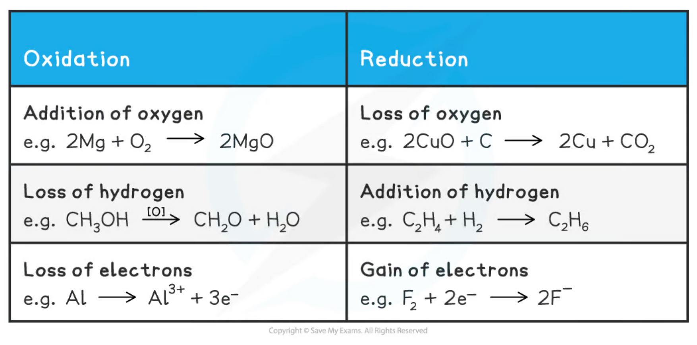
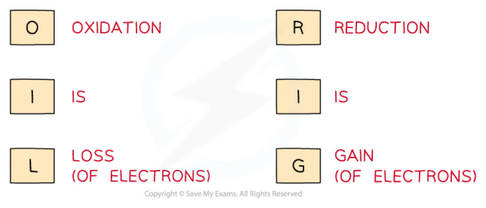
s-, p- and d-block elements
- s-block metals 通常 lose electrons，形成 \(+1\) 或 \(+2\) ions，例如 \(\ce{Na -> Na+ + e-}\) 和 \(\ce{Ca -> Ca^{2+} + 2e-}\)；
- p-block metals 通常 form positive ions，但可能有 multiple oxidation states，例如 \(\ce{Al^{3+}}\)、\(\ce{Sn^{2+}}\) 和 \(\ce{Sn^{4+}}\)；
- p-block non-metals 通常 gain electrons，形成 negative ions，charge 可由 group number 与 8 的关系判断；
- d-block elements 常有 variable oxidation numbers，例如 copper、chromium 和 manganese 的不同 ions。
写 redox half-equation 时必须同时 balance atoms 和 charge，并用 electrons 显示 electron transfer。
16.2-16.4 Standard electrode potential and SHE
Definition and standard conditions
Standard electrode potential, \(E^\circ\)，是 standard half-cell 与 standard hydrogen electrode (SHE) 连接时，在 standard conditions 下测得的 potential difference。使用 high-resistance voltmeter，使 circuit 中几乎没有 current，测得 maximum potential difference。
Standard conditions 是：
- temperature = 298 K；
- gas pressure = 100 kPa；
- ion concentration = 1.00 mol dm\(^{-3}\)。
所有 \(E^\circ\) values 都是相对于 SHE 测量；SHE 被定义为 \(E^\circ=0.00\ \mathrm{V}\)。因此不同 half-cells 的 values 可以比较，形成 electrochemical series。
Standard hydrogen electrode
SHE 的 equilibrium 是：
\[ \ce{2H+(aq) + 2e- <=> H2(g)} \]
它包含：
- platinum electrode，通常 coated with platinum black；
- hydrogen gas at 100 kPa；
- aqueous \(\ce{H+}\) at \(1.00\ \mathrm{mol\,dm^{-3}}\)；
- temperature 298 K。
Platinum 是 inert electrode：提供 electron-conducting surface，但不参加 chemical reaction。Pt black 增大 surface area，使 hydrogen / hydrogen-ion equilibrium 更容易建立。
SHE 必须作为 reference electrode，因为 single half-cell 不能单独测出 absolute electrode potential；只有与已定义为 0.00 V 的 reference 连接，才可读出 relative potential。
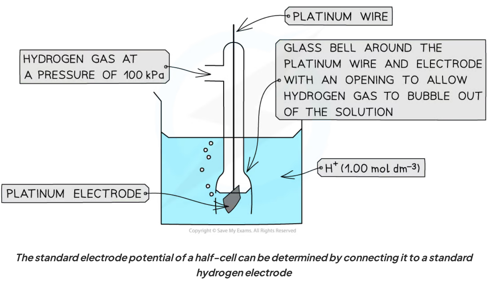
Interpreting \(E^\circ\) values
Standard electrode potentials 通常以 reduction half-equations 列出：
\[ \ce{Br2(l) + 2e- <=> 2Br-(aq)}\qquad E^\circ=+1.09\ \mathrm{V} \]
\[ \ce{Na+(aq) + e- <=> Na(s)}\qquad E^\circ=-2.71\ \mathrm{V} \]
\(E^\circ\) 越 positive，left-hand species 越容易被 reduced，因而是 stronger oxidising agent。\(E^\circ\) 越 negative，right-hand species 越容易被 oxidised，因而是 stronger reducing agent。
16.5 Measuring standard electrode potentials
Three types of half-cell
把 unknown half-cell 与 SHE 连接，使用 salt bridge 和 high-resistance voltmeter。根据 half-cell 的 species，常见三种类型：
- metal / metal-ion half-cell：例如 \(\ce{Ag+(aq) / Ag(s)}\)；
- non-metal / non-metal-ion half-cell：例如 \(\ce{Br2(l) / Br-(aq)}\)，需要 Pt inert electrode；
- ion / ion half-cell：同一 element 的不同 oxidation states，例如 \(\ce{MnO4^- / Mn^{2+}}\)，需要 Pt electrode 和酸性 \(\ce{H+}\)。
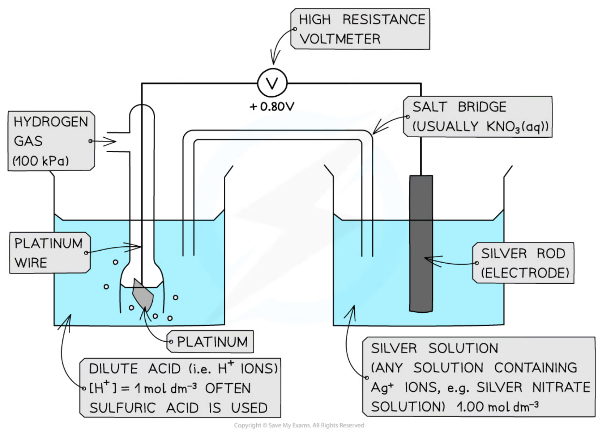
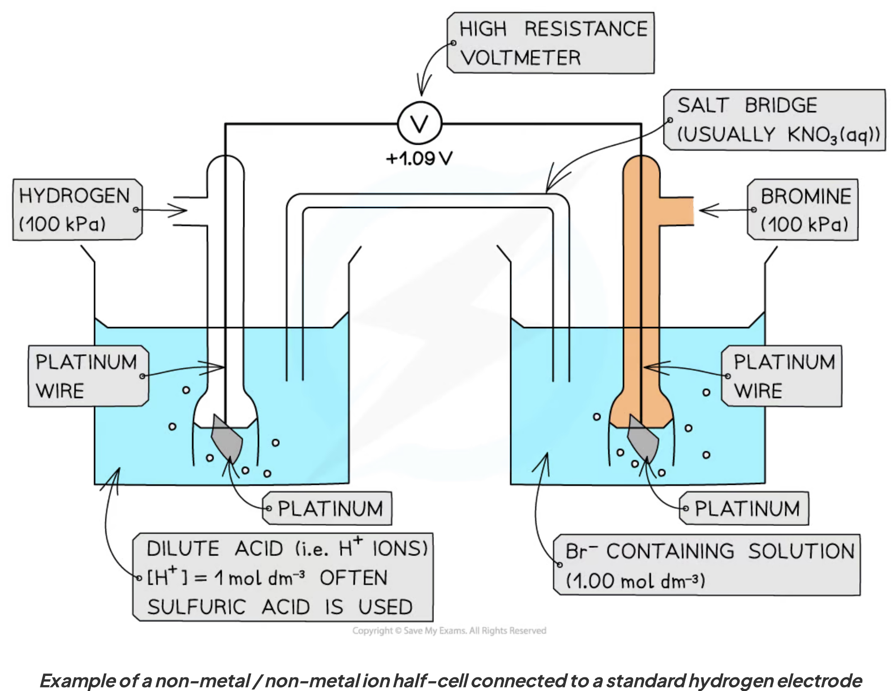
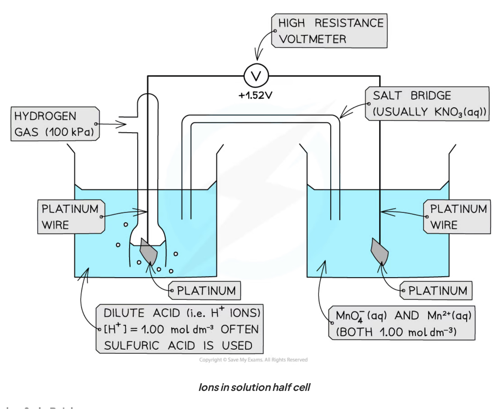
Salt bridge and experimental conditions
Salt bridge 通常含有 \(\ce{KNO3(aq)}\)，允许 ions migrate，完成 internal circuit 并维持 electrical neutrality。选择 ions 时要避免与 half-cell ions 发生 reaction 或形成 precipitate。
测量 \(E\) 时必须严格写出并控制 conditions：temperature、gas pressure、ion concentrations、electrode materials 和 acid concentration。若 conditions 偏离 standard conditions，测量值是 \(E\) 而不是 \(E^\circ\)，不能直接当作 standard value 使用。
16.6-16.8 Electrochemical cells and cell diagrams
Calculating standard cell potential
对于两个 standard reduction potentials：
\[ E^\circ_{\mathrm{cell}}=E^\circ_{\mathrm{right}}-E^\circ_{\mathrm{left}} \]
也可以写成：
\[ E^\circ_{\mathrm{cell}}=E^\circ_{\mathrm{reduction}}-E^\circ_{\mathrm{oxidation}} \]
More positive half-cell 是 cathode / positive electrode，发生 reduction；less positive half-cell 是 anode / negative electrode，发生 oxidation。
例如：
\[ \ce{Cu^{2+} + 2e- <=> Cu}\qquad E^\circ=+0.34\ \mathrm{V} \]
\[ \ce{Zn^{2+} + 2e- <=> Zn}\qquad E^\circ=-0.76\ \mathrm{V} \]
\[ E^\circ_{\mathrm{cell}}=(+0.34)-(-0.76)=+1.10\ \mathrm{V} \]
Cu half-cell 是 positive pole，Zn half-cell 是 negative pole。
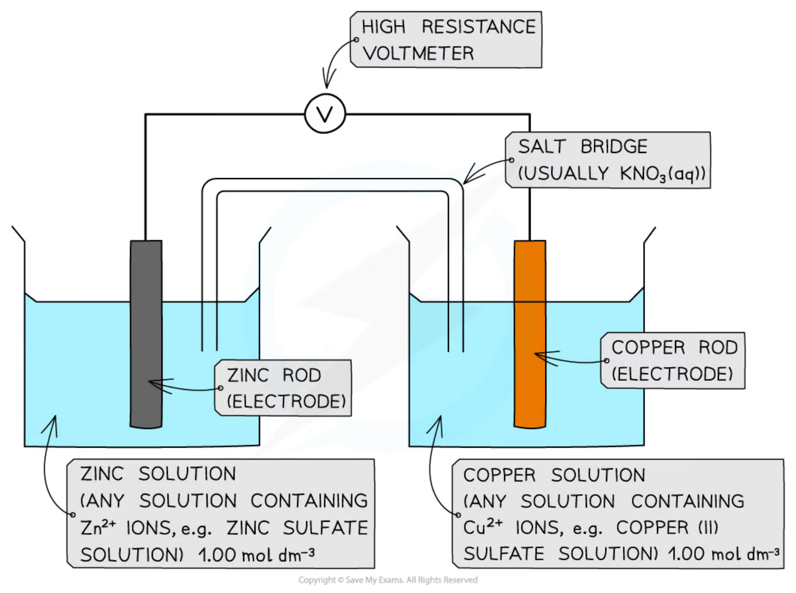
Worked example · cell potential
Given \(E^\circ(\ce{Cu^{2+}/Cu})=+0.34\ \mathrm{V}\) and \(E^\circ(\ce{Zn^{2+}/Zn})=-0.76\ \mathrm{V}\)：
- choose the more positive reduction as cathode：\(\ce{Cu^{2+} + 2e- -> Cu}\)；
- reverse zinc half-equation for oxidation：\(\ce{Zn -> Zn^{2+} + 2e-}\)；
- calculate \(E^\circ_{\mathrm{cell}}=+1.10\ \mathrm{V}\)；
- electron flow is from Zn to Cu through the external circuit。
Because \(E^\circ_{\mathrm{cell}}>0\)，the forward cell reaction is thermodynamically feasible under standard conditions。
Conventional cell representation
Cell diagram 用 shorthand 表示 materials、phase boundaries 和 salt bridge，不需要画完整 apparatus：
\[ \ce{Zn(s) | Zn^{2+}(aq) || Cu^{2+}(aq) | Cu(s)} \]
规则：
- left side 是 anode / oxidation，right side 是 cathode / reduction；
- single vertical line \(|\) 是 phase boundary；
- double line \(||\) 是 salt bridge；
- same phase 的 species 用 comma 分开；
- 若没有 conducting metal，需要在 outer edge 写 inert \(\ce{Pt}\)。
例如 \(\ce{Fe^{2+}/Fe^{3+}}\) half-cell：
\[ \ce{Pt | Fe^{2+}(aq),Fe^{3+}(aq)} \]
氯气 half-cell 可写成：
\[ \ce{Cl2(g),Cl-(aq) | Pt} \]
Cell diagrams 是 conventional representation，不是 quantitative balanced equation；但通常仍应写出 balanced half-equations。
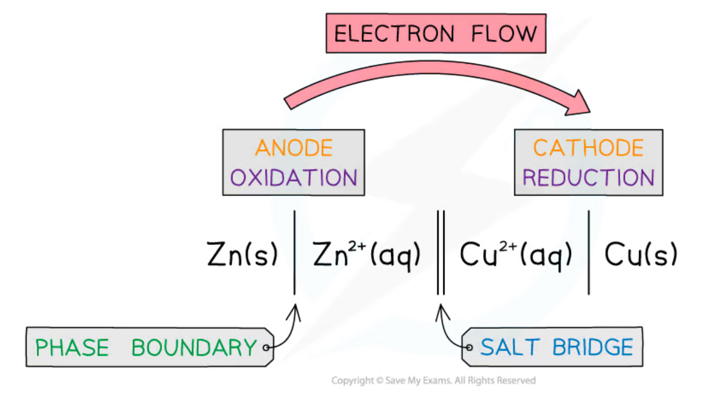
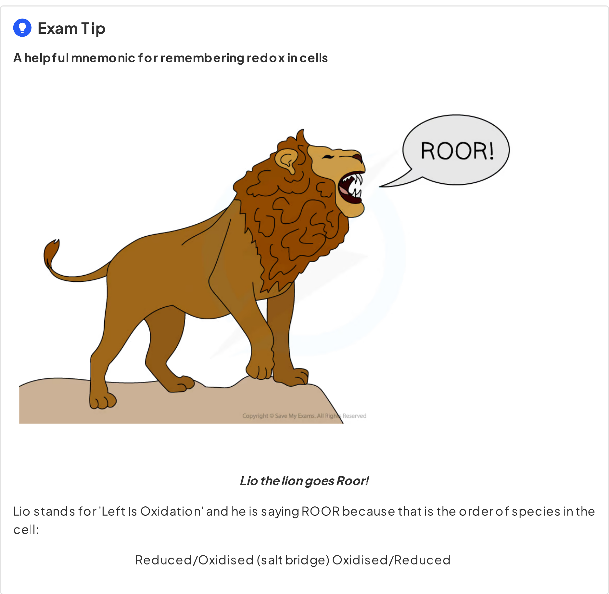
16.9-16.12 Feasibility and thermodynamics
Thermodynamic feasibility
要预测 reaction direction：
- 找出 most positive \(E^\circ\)，它对应 reduction；
- 找出 less positive \(E^\circ\)，把它的 half-equation reverse，进行 oxidation；
- balance electrons，add half-equations；
- calculate \(E^\circ_{\mathrm{cell}}\)。
若 \(E^\circ_{\mathrm{cell}}>0\)，forward reaction 在 standard conditions 下 thermodynamically feasible。这表示 reaction 的 products 在 thermodynamic sense 更 stable，但不保证快速发生。
例如：
\[ \ce{Cl2 + 2e- -> 2Cl-}\qquad E^\circ=+1.36\ \mathrm{V} \]
\[ \ce{Cu^{2+} + 2e- -> Cu}\qquad E^\circ=+0.34\ \mathrm{V} \]
\(\ce{Cl2}\) 被 reduced，Cu 被 oxidised，\(E^\circ_{\mathrm{cell}}=+1.02\ \mathrm{V}\)，所以 reaction feasible。
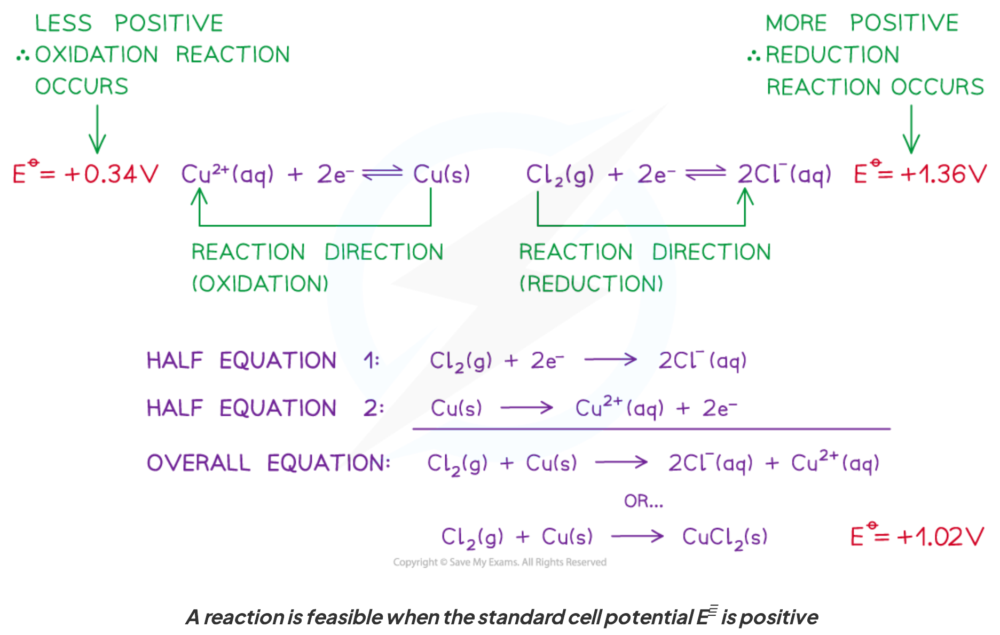
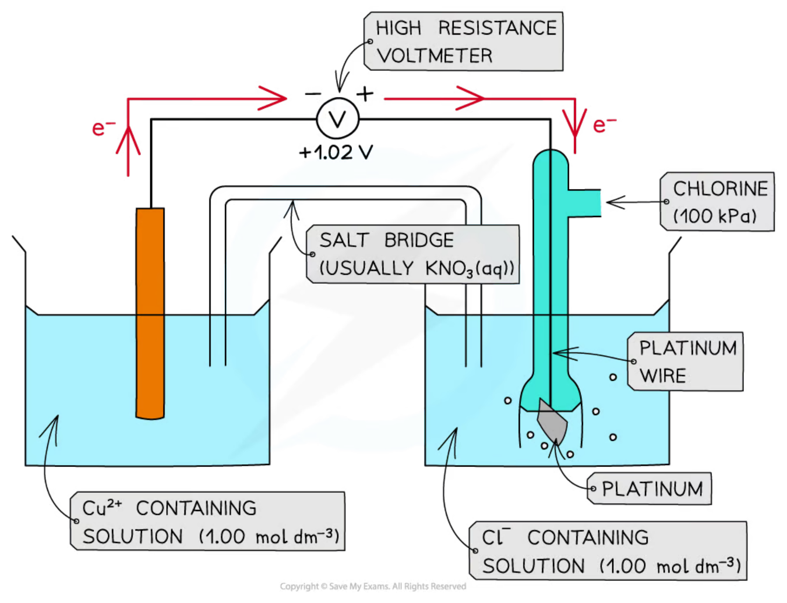
Entropy and equilibrium constant
Specification 要求理解两个 directly proportional relationships：
\[ E^\circ_{\mathrm{cell}}\propto \Delta S_{\mathrm{total}} \]
\[ E^\circ_{\mathrm{cell}}\propto \ln K \]
因此 larger positive \(E^\circ_{\mathrm{cell}}\) 对应 larger positive total entropy change 和 larger \(K\)，即 equilibrium 更偏向 products。此处只要求理解 proportional relationships，不要求使用包含 Faraday constant 的 Gibbs equations 做 numerical calculation。
Limitations of \(E^\circ\) predictions
\(E^\circ\) prediction 有重要 limitations：
- \(E^\circ\) 只说明 thermodynamic feasibility，不说明 reaction rate；
- high activation energy 可能使 feasible reaction 很慢，system 表现为 kinetically stable；
- non-standard concentrations、gas pressures 和 temperatures 会改变 electrode potentials；
- electrode potentials 通常在 aqueous conditions 测量，不能直接预测 non-aqueous reactions；
- complex equilibria、precipitation 或 ligand interactions 也可能改变实际 behaviour。
例如 \(\ce{Cu^{2+}}\) 与 \(\ce{H2}\) 的 reaction 在 standard data 下可能有 positive emf，但 activation energy 很高，room temperature 下不明显发生。Thermodynamically feasible 不等于 kinetically observable。
Disproportionation
Disproportionation 是同一种 oxidation state 同时发生 oxidation 和 reduction：
\[ \ce{2X^{n} -> X^{n-1} + X^{n+1}} \]
判断方法是：
- 写出 intermediate oxidation state 向 higher state 的 oxidation half-equation；
- 写出 intermediate oxidation state 向 lower state 的 reduction half-equation；
- 合并并计算 \(E^\circ_{\mathrm{cell}}\)；
- 若 \(E^\circ_{\mathrm{cell}}>0\)，disproportionation 在 standard conditions 下 thermodynamically feasible。
注意：在相加 half-equations 时要 balance electrons，但不能把 \(E^\circ\) values 按 coefficients 相乘。
16.13 Electrochemical series
Standard electrode potentials 也称 standard reduction potentials。把 half-equations 按 \(E^\circ\) 从 negative 到 positive 排列，就得到 electrochemical series：
- more positive reduction potential \(→\) stronger oxidising agent；
- more negative reduction potential \(→\) stronger reducing agent；
- series 可用于预测 cell voltage、reaction direction 和 disproportionation。
实际应用时要结合 standard conditions 和 kinetic limitations，不能把 series 当作 reaction-rate table。
16.17-16.19 Hydrogen-oxygen fuel cells
Fuel-cell principle
Fuel cell 是 fuel 连续供给并在 electrode 发生 oxidation，oxygen 在另一 electrode 发生 reduction，释放的 chemical energy 转换为 electrical energy 的 electrochemical cell。只要 hydrogen / oxygen 持续供应，cell 就可以 continuous operation，不像 ordinary battery 那样把 reactants 全部预先储存在 cell 内。
Hydrogen-rich fuels（例如 hydrogen、methanol）可以作 fuel。Hydrogen-oxygen fuel cell 的 overall reaction 是：
\[ \ce{2H2(g) + O2(g) -> 2H2O(l)} \]
水是主要 reaction product，且 fuel cell 在 relatively low temperature 下把 energy 直接转为 electrical work，而不是先 combustion 成 heat。
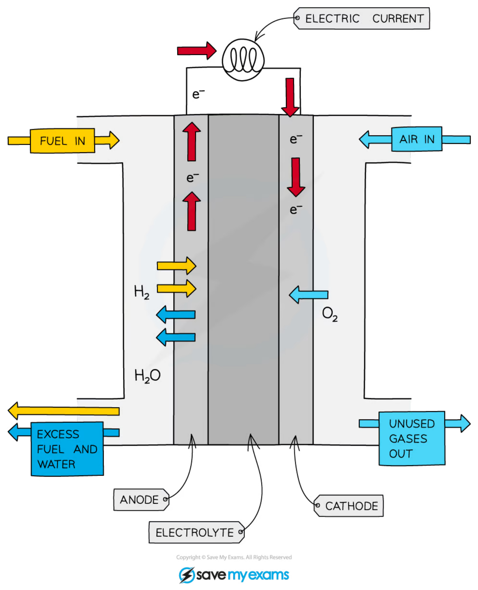
Alkaline hydrogen-oxygen fuel cell
Alkaline electrolyte 中的 half-equations：
Negative electrode / anode / oxidation
\[ \ce{H2 + 2OH- -> 2H2O + 2e-} \]
Positive electrode / cathode / reduction
\[ \ce{O2 + 2H2O + 4e- -> 4OH-} \]
Multiply anode equation by 2，add and cancel \(\ce{OH-}\)、\(\ce{H2O}\) 和 electrons：
\[ \ce{2H2 + O2 -> 2H2O} \]
Anode 是 negative electrode，cathode 是 positive electrode；electrons travel through external circuit from anode to cathode。
Acidic hydrogen-oxygen fuel cell
Acidic electrolyte 中的 half-equations：
Anode / oxidation
\[ \ce{H2 -> 2H+ + 2e-} \]
Cathode / reduction
\[ \ce{O2 + 4H+ + 4e- -> 2H2O} \]
Combine after multiplying the anode by 2，得到 same overall equation：
\[ \ce{2H2 + O2 -> 2H2O} \]
虽然 acidic 和 alkaline cells 的 electrode equations 不同，但 net reaction 相同。
Benefits and risks
| Benefits | Risks / limitations |
|---|---|
| water is the main product | hydrogen is highly flammable |
| no direct \(\ce{CO2}\) from hydrogen fuel | hydrogen production may depend on non-renewable sources |
| no high-temperature combustion \(\ce{NO_x}\) | compressed hydrogen needs thick containers |
| continuous operation while fuel is supplied | low energy density per unit volume as a gas |
| high energy density per unit mass | infrastructure and fuel cost |
16.15-16.17 Redox titration calculations
General calculation sequence
Redox titration 中，oxidising agent 与 reducing agent 通过 electron transfer reaction，concentration 由 known solution 的 titre 推出。通用流程：
- 写 oxidant 和 reductant 的 half-equations；
- balance electrons，得到 overall ionic equation；
- 由 \(n=cV\) 计算 known solution 的 moles；
- 用 stoichiometric ratio 计算 sample species 的 moles；
- 若有 dilution / aliquot，按 volume factor 还原到 original sample；
- 求 concentration、mass、percentage purity 或 percentage composition；
- 检查 units、significant figures 和 titre concordance。
Potassium manganate(VII) and iron(II)
Acidified manganate(VII) titration
在 acidic solution 中，\(\ce{MnO4^-}\) 是 oxidising agent，reduced 为 \(\ce{Mn^{2+}}\)；\(\ce{Fe^{2+}}\) 是 reducing agent，oxidised 为 \(\ce{Fe^{3+}}\)。必须使用 dilute sulfuric acid；hydrochloric acid 可能被 oxidised，nitric acid 也是不合适的 oxidising acid。
Half-equations：
\[ \ce{MnO4^- + 8H+ + 5e- -> Mn^{2+} + 4H2O} \]
\[ \ce{Fe^{2+} -> Fe^{3+} + e-} \]
Overall ionic equation：
\[ \ce{MnO4^- + 8H+ + 5Fe^{2+} -> Mn^{2+} + 4H2O + 5Fe^{3+}} \]
Potassium manganate(VII) 是 self-indicator：endpoint 是 first permanent pale pink colour。可用于 iron tablets 的 percentage iron 或 hydrated ethanedioic acid formula analysis。
Worked example · iron tablet
一片 mass \(0.960\ \mathrm{g}\) 的 iron tablet 溶解后，平均需要 \(28.50\ \mathrm{cm^3}\) 的 \(0.0180\ \mathrm{mol\,dm^{-3}}\) \(\ce{KMnO4}\)。
\[ n(\ce{MnO4^-})=0.0180\times\frac{28.50}{1000}=5.13\times10^{-4}\ \mathrm{mol} \]
由 \(\ce{MnO4^-:Fe^{2+}}=1:5\)：
\[ n(\ce{Fe^{2+}})=5(5.13\times10^{-4})=2.565\times10^{-3}\ \mathrm{mol} \]
\[ m(\ce{Fe})=2.565\times10^{-3}\times55.8=0.143\ \mathrm{g} \]
\[ \%\mathrm{Fe}=\frac{0.143}{0.960}\times100=14.9\% \]
Sodium thiosulfate and iodine
Iodine-thiosulfate titration
Iodine 与 thiosulfate 的 ionic equation：
\[ \ce{I2 + 2S2O3^{2-} -> 2I- + S4O6^{2-}} \]
Iodine 的 brown / yellow colour 随着转化为 colourless iodide 而变浅。当 solution 变成 pale straw colour 时加入 starch；starch-iodine complex 是 blue-black，endpoint 是 blue-black colour just disappears。
这类 titration 可测定某 oxidising agent 的 concentration：先由 oxidant 将 excess iodide oxidise 为 \(\ce{I2}\)，再用 known sodium thiosulfate titrate the iodine。
Worked example · bleach analysis
Bleach 中 \(\ce{ClO^-}\) 先氧化 iodide：
\[ \ce{ClO^- + 2I^- + 2H+ -> Cl^- + I2 + H2O} \]
然后：
\[ \ce{I2 + 2S2O3^{2-} -> 2I- + S4O6^{2-}} \]
若 \(25.0\ \mathrm{cm^3}\) diluted bleach 需要 \(25.20\ \mathrm{cm^3}\) 的 \(0.0500\ \mathrm{mol\,dm^{-3}}\) thiosulfate：
\[ n(\ce{S2O3^{2-}})=0.0500\times\frac{25.20}{1000}=1.26\times10^{-3}\ \mathrm{mol} \]
由 \(\ce{ClO^-:S2O3^{2-}}=1:2\)，\(25.0\ \mathrm{cm^3}\) diluted sample 含 \(6.30\times10^{-4}\ \mathrm{mol}\) \(\ce{ClO^-}\)。若 \(10.0\ \mathrm{cm^3}\) original bleach diluted to \(250.0\ \mathrm{cm^3}\)，concentration of original bleach：
\[ c(\ce{ClO^-})=0.630\ \mathrm{mol\,dm^{-3}} \]
16.16 Uncertainty and validity
Percentage uncertainty
Percentage uncertainty 用来比较 measurement uncertainty 相对于 measured value 的 significance：
\[ \%\mathrm{uncertainty}=\frac{\mathrm{absolute\ uncertainty}}{\mathrm{measured\ value}}\times100 \]
当 add / subtract measurements 时，absolute uncertainties 相加；当 quantities multiply / divide 时，通常应考虑 relative / percentage uncertainties 的 propagation。Final answer 的 uncertainty 可能影响 significant figures 和结论的 validity。
例如 burette 每次 reading uncertainty 为 \(\pm0.10\ \mathrm{cm^3}\)，一份 titre 需要 initial 和 final readings，所以 titre uncertainty 约为 \(\pm0.20\ \mathrm{cm^3}\)：
- titre \(5.0\ \mathrm{cm^3}\)：\(0.20/5.0\times100=4.0\%\)；
- titre \(30.0\ \mathrm{cm^3}\)：\(0.20/30.0\times100=0.67\%\)。
因此可以通过适当 dilution，使 titre 较大，从而降低 burette readings 的 percentage uncertainty。还应使用 concordant titres、repeat measurements、average results，并报告 anomalous result 的处理。
Core Practical checklist
Source note
本页面对应：Note per Chapter/Note per Chapter/5.1 Redox Equilibria.pdf.pdf；考纲范围对应 International-A-Level-Chemistry-Spec 的 Topic 16: Redox Equilibria（16.1–16.19）。页面中的示意图均从本章 note 独立提取并保存到 assets/notes/redox/，便于单独放大和复用。